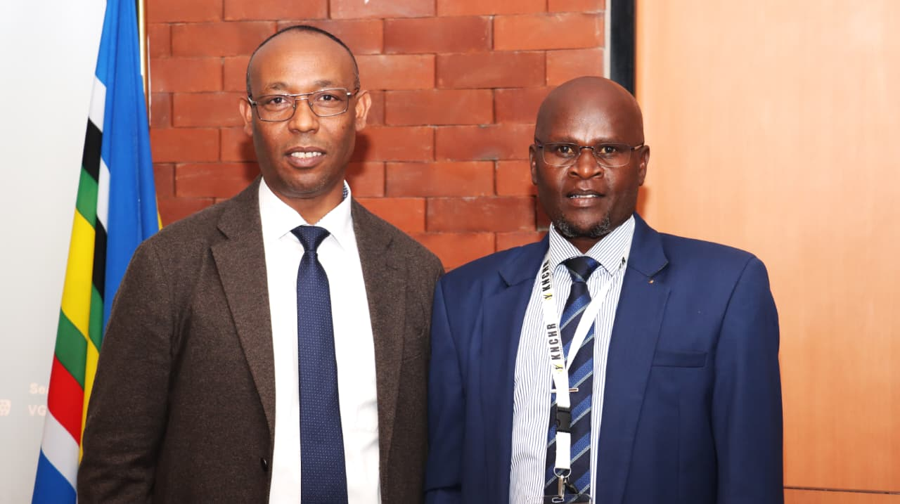

STRENGTHENING INSTITUTIONAL COLLABORATION: KNCHR HOSTS ETHIOPIAN HUMAN RIGHTS COMMISSION FOR STUDY VISIT

From 17th to 20th February 2026, the Kenya National Commission on Human Rights (KNCHR) hosted a high-level delegation from the Ethiopian Human Rights Commission (EHRC) at the Kimathi Board Room, KNCHR Headquarters, Nairobi.
The study visit brought together management and senior officers from both institutions for a structured knowledge-exchange program aimed at strengthening institutional capacity, sharing best practices, and deepening regional cooperation among African National Human Rights Institutions (NHRIs).
/
Opening Remarks by Commissioner Dr. Wamalwa Dennis
In his opening remarks, Commissioner Dr. Wamalwa Dennis warmly welcomed the EHRC delegation to Kenya and commended the growing spirit of collaboration among African NHRIs. He emphasized that peer learning remains one of the most practical and impactful tools for institutional strengthening across the continent.
He concluded by reaffirming KNCHR’s openness to sustained partnerships with EHRC and other African NHRIs, noting that such cooperation strengthens not only institutions but also the broader human rights architecture across Africa.
Key Highlights of the Study Visit
1. Institutional Framework and Complaints Handling
The delegation received a comprehensive introduction to KNCHR’s structure and mandate, including its complaints handling and investigation processes. Discussions focused on procedural safeguards, follow-up mechanisms, and ensuring timely redress for victims.
2. Business and Human Rights & Legal Redress
Sessions explored Kenya’s approach to Business and Human Rights (BHR), legal enforcement pathways, and judicial reforms. The discussions reflected KNCHR’s expanding role in ensuring accountability of both state and non-state actors.
3. Detention Monitoring and Torture Prevention
The EHRC delegation engaged in discussions on KNCHR’s detention monitoring framework and torture prevention mechanisms, reinforcing the importance of oversight in safeguarding fundamental freedoms.
4. Transitional Justice and Migration
Presentations on transitional justice mechanisms and migration-related human rights issues highlighted emerging challenges in governance, displacement, and regional mobility.
5. Electoral Processes and Early Warning Systems
A significant portion of the visit was dedicated to election monitoring and early warning systems. The KNCHR Election Monitoring System, presented by the ICT department, demonstrated how technology enhances transparency, real-time reporting, and rapid response during electoral cycles.
The delegation also engaged with:
- The Office of the Registrar of Political Parties (ORPP)
- The Elections Observation Group (ELOG)
These engagements provided practical insights into multi-stakeholder coordination in electoral governance.
6. Recommendation Tracking and International Reporting
KNCHR’s system for tracking recommendations from the Universal Periodic Review (UPR) and other regional and international mechanisms was presented as a best practice in ensuring state accountability and implementation monitoring.
7. Security Sector Reforms and Refugee Protection
The final day featured focused technical discussions on transitional justice, refugee rights, and security sector reforms—areas that remain central to regional stability and human rights protection.
Strengthening Regional Human Rights Architecture
The visit concluded with a closing debrief led by the Vice Chairperson of KNCHR, reaffirming the importance of sustained collaboration and mutual technical support.
The study visit stands as a testament to the growing cooperation between African human rights institutions. By fostering dialogue, exchanging expertise, and strengthening institutional systems, KNCHR and EHRC continue to advance the shared goal of promoting, protecting, and implementing human rights across the continent.